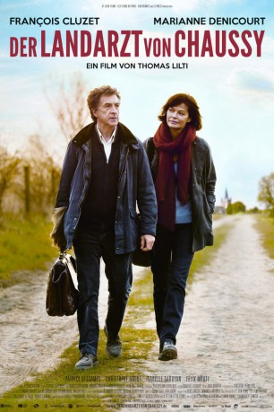
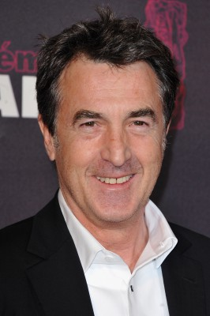

#5415 Der Landarzt von Chaussy
 
 IMDB-Wertung: 6.7 / 10
IMDB-Wertung: 6.7 / 10  Metascore: 0
Metascore: 0 
Dr. Jean-Pierre Werner ist Single und sein Sohn Vincent erwachsen. Daher hat der Doktor viel Zeit, sich um seine Patienten zu kümmern. Seit über 30 Jahren ist er Dorfarzt, wann immer jemand ein gesundheitliches Problem hat, ist der allseits beliebte Dr. Werner zur Stelle. Aber irgendwann wird jeder mal krank, auch ein Arzt. Deswegen muss der Veteran, als es ihn erwischt, eine Vertretung einstellen. Und diese Vertretung in Gestalt von Dr. Nathalie Delezia kommt schneller, als Dr. Werner lieb ist – schnell fühlt er sich in seinem Status von der Neuen bedroht. Der erfahrene Doktor hält sich für unersetzbar und will die selbstbewusste Nathalie partout nicht als seine mögliche Nachfolgerin akzeptieren. So bleibt der neuen Ärztin im Dorf nur, sich die Anerkennung hart zu erarbeiten…
Jahr: 2016
Dauer: 102 Minuten
FSK: 0
Land: Frankreich Studio: Alamode FilmTonspuren:
Untertitel:
Auflösung: 1080p (1920x808) Größe: 3860 MB
Genre: Drama, Komödie
Regisseur: Thomas Lilti
Drehbuch: Fibe Ma
Soundtrack:
Darsteller:
-  François Cluzet als Jean-Pierre Werner
- Isalinde Giovangigli als Chargée de mission
- Wilfried Capet als Bartender
- Marianne Denicourt als Nathalie Delezia
- Christophe Odent als Norès
- Patrick Descamps als Francis Maroini
- Guy Faucher als Monsieur Sorlin
- Margaux Fabre als Ninon
- Julien Lucas als Le fiancé de Ninon
- Yohann Goetzmann als Alexis
- Josée Laprun als La mère d'Alexis
- Philippe Bertin als Guy
- Géraldine Schitter als Fanny
- Isabelle Sadoyan als La mère de Werner
- Félix Moati als Vincent Werner
- Sylvie Lachat als La patiente dépressive
- Régis Iacono als Le patient diabétique
- Michel Charrel als Monsieur Jallet
- Jeanne Buchard als Jeune femme condylome
- Anthony Bajon als Jeune homme condylome
- Jean Haas als Monsieur Voucher
- Michel Ridou als L'agriculteur
- Lismène Joseph als Sandana
- Françoise Pinkwasser als La patiente ménisque
- Jeanne Cellard als Vieille patiente alitée
- Claudine Baschet als Vieille dame campement
- Jennifer Rozier als Mère Enzo
- Merwan Baghdadi als Enzo
- Blanche Cluzet als Educatrice CAT
- Rafik Ben Mebarek als Conducteur accident
- Juliette Aoudia als Infirmière chimio
- Cécile Bouillot als Représentante département
- Marilyse Lagrafeuil als Serveuse restaurant
- Sébastien Faglain als Employé de mairie
- Frank Silver als Chanteur groupe Country
- Vladimir Enquin als Fils du Maire
Datei: X:\2016(G-M)\Landarzt von Chaussy, Der (2016, FSK0, 1920x808).mkv seit 30.01.2017
Festplatte: HD 2016(A-Z)
 Es gibt insgesamt 164 Filme in der Gruppe '2016(G-M)'
Es gibt insgesamt 164 Filme in der Gruppe '2016(G-M)'